Show the code
library(tidyverse)
library(gtsummary)
library(readxl)4 dot Marker and 6 dot marker CT During imaging timer verification are calculate different time points and values taken Amplitute in mm vs time in sec.
library(tidyverse)
library(gtsummary)
library(readxl)final_4d_ct <- read_excel("6d vs 4d CT recorded timer_SM_for stats.xlsx",
sheet = "FINAL_4d_CT IMAGING")
marker_4d <- final_4d_ct |> select(`...2`, `5.0 Sec`, `4.5 Sec`, `4.0 Sec`,
`3.5 Sec`, `3.0 Sec`,`2.5 Sec`,`2.0 Sec`) |>
rename(sample_position = `...2`,
m4d_5.0s = `5.0 Sec`,
m4d_4.5s = `4.5 Sec`,
m4d_4.0s = `4.0 Sec`,
m4d_3.5s = `3.5 Sec`,
m4d_3.0s = `3.0 Sec`,
m4d_2.5s = `2.5 Sec`,
m4d_2.0s = `2.0 Sec`)marker_4d_long <- marker_4d |> gather(
key = "marker_point", value = "marker_value", m4d_5.0s:m4d_2.0s) |> na.omit()
ggplot(marker_4d_long,aes(x = sample_position, y = marker_value,
group =marker_point, colour = marker_point)) +
geom_line() + ggtitle("4 dot marker CT different time point")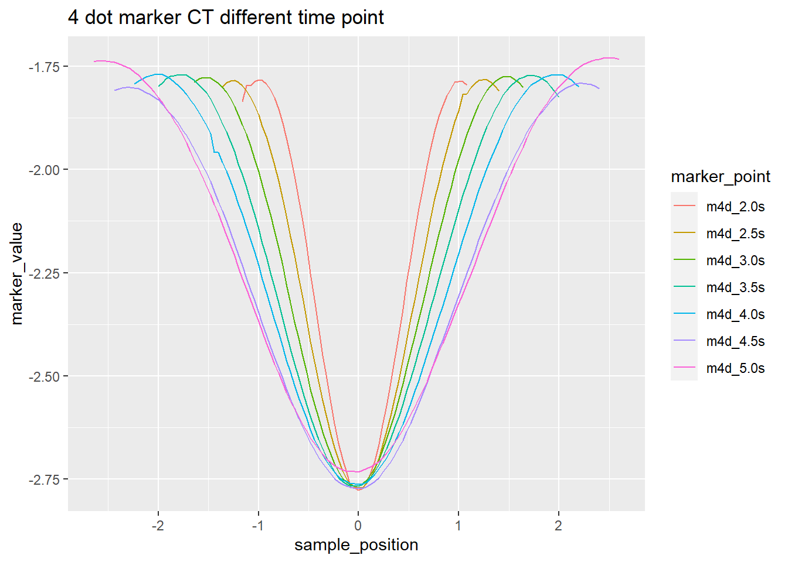
marker_4d_long |> select(-sample_position) |>
tbl_summary(
by = marker_point,
type = all_continuous() ~ "continuous2",
statistic = list(all_continuous() ~ c("{min}, {max}", "{mean}","{sd}",
"{median}", "{p25}, {p75}"))
)| Characteristic | m4d_2.0s, N = 57 | m4d_2.5s, N = 70 | m4d_3.0s, N = 83 | m4d_3.5s, N = 101 | m4d_4.0s, N = 112 | m4d_4.5s, N = 122 | m4d_5.0s, N = 132 |
|---|---|---|---|---|---|---|---|
| marker_value | |||||||
| Range | -2.78, -1.78 | -2.77, -1.78 | -2.77, -1.77 | -2.77, -1.77 | -2.76, -1.77 | -2.77, -1.79 | -2.73, -1.73 |
| Mean | -2.20 | -2.21 | -2.20 | -2.19 | -2.19 | -2.23 | -2.18 |
| SD | 0.37 | 0.36 | 0.36 | 0.37 | 0.36 | 0.35 | 0.36 |
| Median | -2.12 | -2.14 | -2.15 | -2.11 | -2.12 | -2.18 | -2.14 |
| IQR | -2.57, -1.84 | -2.56, -1.83 | -2.56, -1.84 | -2.54, -1.81 | -2.56, -1.82 | -2.57, -1.87 | -2.54, -1.82 |
final_6d_ct <- read_excel("6d vs 4d CT recorded timer_SM_for stats.xlsx",
sheet = "FINAL_6d_CT IMAGING")
marker_6d <- final_6d_ct |> select(`...2`, `5.0 Sec`, `4.5 Sec`, `4.0 Sec`,
`3.5 Sec`, `3.0 Sec`,`2.5 Sec`,`2.0 Sec`) |>
rename(sample_position = `...2`,
m6d_5.0s = `5.0 Sec`,
m6d_4.5s = `4.5 Sec`,
m6d_4.0s = `4.0 Sec`,
m6d_3.5s = `3.5 Sec`,
m6d_3.0s = `3.0 Sec`,
m6d_2.5s = `2.5 Sec`,
m6d_2.0s = `2.0 Sec`)marker_6d_long <- marker_6d |> gather(
key = "marker_point", value = "marker_value", m6d_5.0s:m6d_2.0s) |> na.omit()
ggplot(marker_6d_long, aes(x = sample_position, y = marker_value, group = marker_point,
colour = marker_point)) +
geom_line() + ggtitle("6 dot marker CT different time point")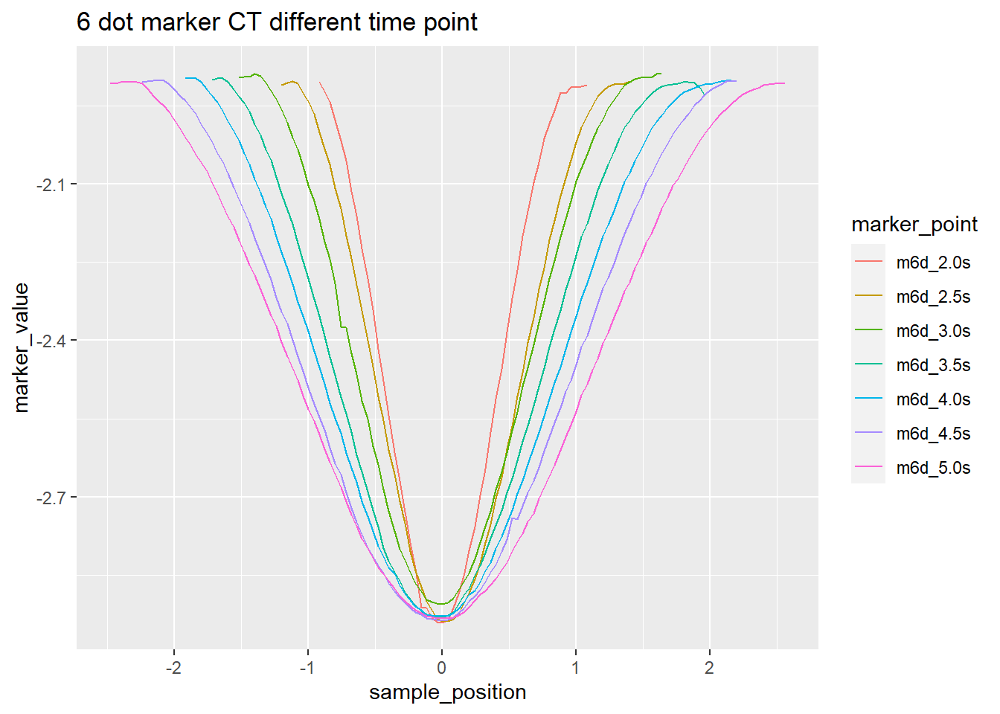
marker_6d_long |> select(-sample_position) |>
tbl_summary(
by = marker_point,
type = all_continuous() ~ "continuous2",
statistic = list(all_continuous() ~ c("{min}, {max}", "{mean}","{sd}",
"{median}", "{p25}, {p75}"))
)| Characteristic | m6d_2.0s, N = 51 | m6d_2.5s, N = 66 | m6d_3.0s, N = 80 | m6d_3.5s, N = 93 | m6d_4.0s, N = 103 | m6d_4.5s, N = 112 | m6d_5.0s, N = 127 |
|---|---|---|---|---|---|---|---|
| marker_value | |||||||
| Range | -2.94, -1.90 | -2.94, -1.90 | -2.91, -1.89 | -2.93, -1.90 | -2.93, -1.90 | -2.94, -1.90 | -2.93, -1.90 |
| Mean | -2.38 | -2.37 | -2.34 | -2.36 | -2.38 | -2.40 | -2.39 |
| SD | 0.37 | 0.38 | 0.37 | 0.37 | 0.37 | 0.37 | 0.37 |
| Median | -2.34 | -2.32 | -2.29 | -2.32 | -2.35 | -2.38 | -2.36 |
| IQR | -2.74, -2.01 | -2.74, -1.99 | -2.70, -1.97 | -2.73, -1.99 | -2.74, -2.01 | -2.75, -2.04 | -2.75, -2.02 |
marker_6d_4d_5s <- inner_join(
marker_6d |> select(sample_position, m6d_5.0s),
marker_4d |> select(sample_position, m4d_5.0s),
by = "sample_position") |> mutate(
m6d_5.0s_delta = c(NA, diff(m6d_5.0s)),
m4d_5.0s_delta = c(NA, diff(m4d_5.0s))
) |> gather(
key = "marker_type", value = "marker_value", c(m6d_5.0s, m4d_5.0s)) |>
gather(key = "marker_delta_type", value = "marker_delta_value",
c(m6d_5.0s_delta, m4d_5.0s_delta))marker_6d_4d_5s |> ggplot(aes(x=sample_position, y=marker_value,
group=marker_type, color=marker_type)) +
geom_line() + ggtitle("6 dot and 4 dot marker")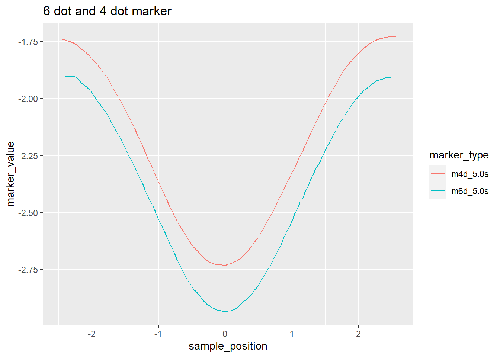
marker_6d_4d_5s |> ggplot(aes(x=sample_position, y=marker_delta_value,
group=marker_delta_type, color=marker_delta_type)) +
geom_line() + ggtitle("6 dot and 4 dot marker")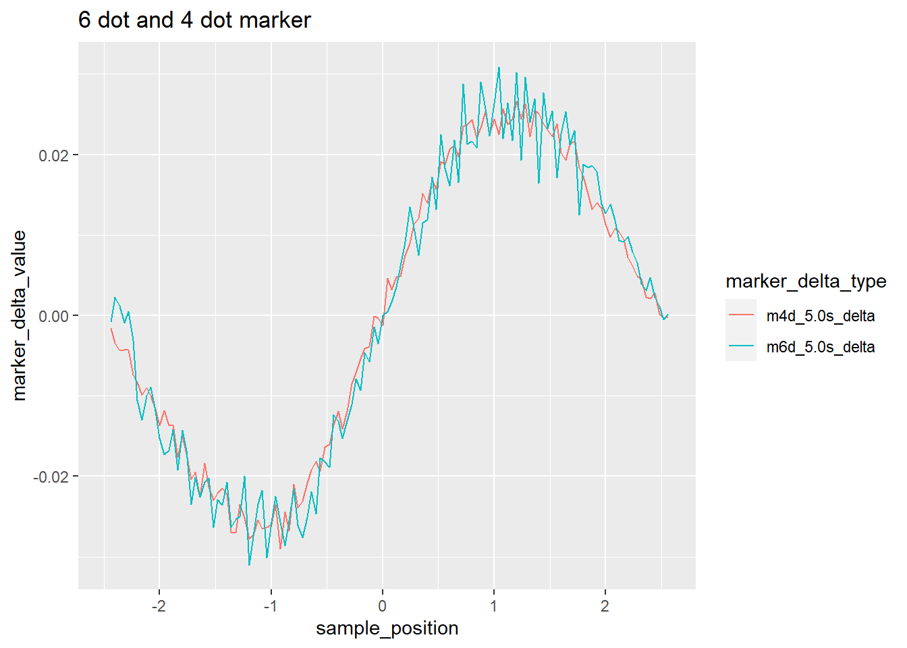
marker_6d_4d_5s |> select(marker_delta_type, marker_delta_value) |>
tbl_summary(
by = marker_delta_type,
type = all_continuous() ~ "continuous2",
statistic = list(all_continuous() ~ c("{min}, {max}", "{mean}","{sd}",
"{median}", "{p25}, {p75}"))
)| Characteristic | m4d_5.0s_delta, N = 254 | m6d_5.0s_delta, N = 254 |
|---|---|---|
| marker_delta_value | ||
| Range | -0.029, 0.027 | -0.031, 0.031 |
| Mean | 0.000 | 0.000 |
| SD | 0.018 | 0.019 |
| Median | 0.000 | 0.001 |
| IQR | -0.017, 0.018 | -0.018, 0.017 |
| Unknown | 2 | 2 |
Cross-correlation is a mathematical and statistical technique used to measure the similarity or relationship between two time series or signals.
Null hypothesis: that the patterns of the two graphs are the same (there is no time lag between them) we can perform a statistical hypothesis test. In this case, the null hypothesis is that the cross-correlation at all lags is not significantly different from zero.
cross_correlation <- function(df1, col1, df2, col2, colname){
df = inner_join(
df1 |> select(sample_position, {{col1}}),
df2 |> select(sample_position, {{col2}}),
by = "sample_position"
) |> na.omit()
crosscorr_result = ccf(df |> select({{col1}}), df |> select({{col2}}),
main = {{colname}},
xlab = "Lag", ylab = "Cross-Correlation"
)
# "Cross-Correlation Function between 4d and 6d marker",
p_values <- 2 * (1 - pnorm(abs(crosscorr_result$acf)))
alpha <- 0.05
significant_lags <- which(p_values < alpha)
if (length(significant_lags) > 0) {
cat("Significant lags (indicating different patterns)
found at lags:", significant_lags, "\n")
} else {
cat("No significant lags (indicating similar patterns) found.\n")
}
result <- list(
crosscorr_result = crosscorr_result,
significant_lags = significant_lags
)
return(result)
}
cross_correlation(marker_6d, m6d_5.0s, marker_4d, m4d_5.0s, "4d and 6d 5.0 sec")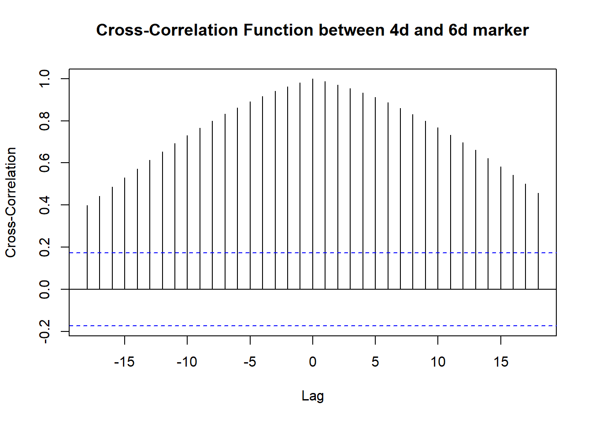
No significant lags (indicating similar patterns) found.$crosscorr_result
Autocorrelations of series 'X', by lag
-18 -17 -16 -15 -14 -13 -12 -11 -10 -9 -8 -7 -6
0.397 0.442 0.486 0.530 0.572 0.613 0.653 0.692 0.729 0.765 0.799 0.832 0.862
-5 -4 -3 -2 -1 0 1 2 3 4 5 6 7
0.890 0.916 0.941 0.962 0.982 0.999 0.986 0.971 0.954 0.934 0.911 0.887 0.860
8 9 10 11 12 13 14 15 16 17 18
0.831 0.800 0.768 0.733 0.698 0.660 0.622 0.582 0.542 0.500 0.458
$significant_lags
integer(0)marker_4d |> mutate(
m4d_5.0s_lags = c(NA, diff(m4d_5.0s)),
m4d_4.5s_lags = c(NA, diff(m4d_4.5s)),
m4d_4.0s_lags = c(NA, diff(m4d_4.0s)),
m4d_3.5s_lags = c(NA, diff(m4d_3.5s)),
m4d_3.0s_lags = c(NA, diff(m4d_3.0s)),
m4d_2.5s_lags = c(NA, diff(m4d_2.5s)),
m4d_2.0s_lags = c(NA, diff(m4d_2.0s)),
) -> marker_4d_df
marker_4d_df |> select(sample_position, m4d_5.0s:m4d_2.0s) |> gather(
key = "marker_type", value = "marker_value", m4d_5.0s:m4d_2.0s) |>
na.omit() -> marker_4d_df1
marker_4d_df1 |> select(sample_position,marker_type, marker_value) |>
ggplot(aes(x=sample_position, y=marker_value, group=marker_type,
color=marker_type)) + geom_line() +
ggtitle("4 dot marker CT different time point") 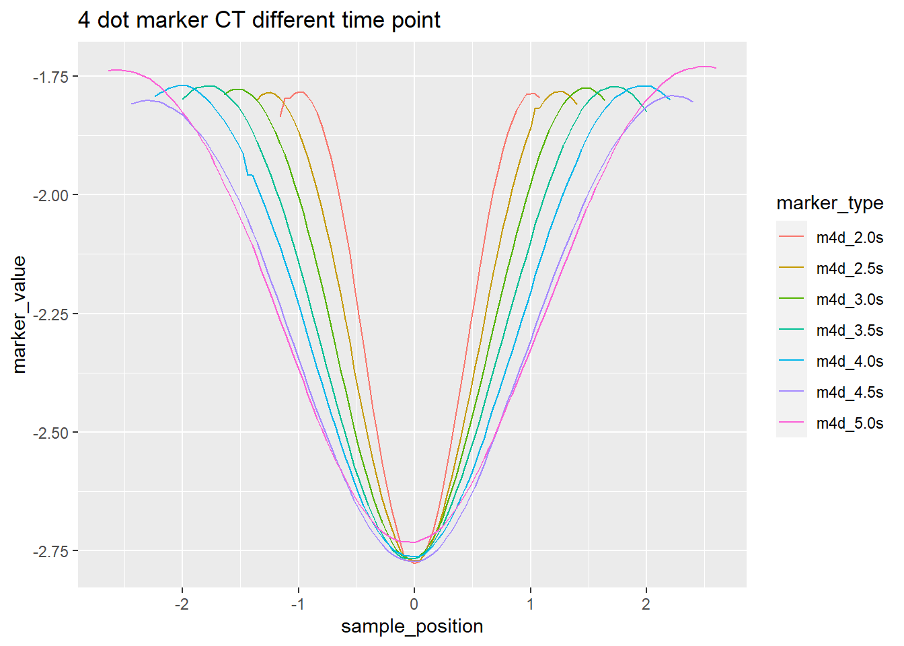
marker_4d_df1 |> select(marker_type, marker_value) |>
tbl_summary(
by = marker_type,
type = all_continuous() ~ "continuous2",
statistic = list(all_continuous() ~ c("{min}, {max}", "{mean}","{sd}",
"{median}", "{p25}, {p75}"))
)| Characteristic | m4d_2.0s, N = 57 | m4d_2.5s, N = 70 | m4d_3.0s, N = 83 | m4d_3.5s, N = 101 | m4d_4.0s, N = 112 | m4d_4.5s, N = 122 | m4d_5.0s, N = 132 |
|---|---|---|---|---|---|---|---|
| marker_value | |||||||
| Range | -2.78, -1.78 | -2.77, -1.78 | -2.77, -1.77 | -2.77, -1.77 | -2.76, -1.77 | -2.77, -1.79 | -2.73, -1.73 |
| Mean | -2.20 | -2.21 | -2.20 | -2.19 | -2.19 | -2.23 | -2.18 |
| SD | 0.37 | 0.36 | 0.36 | 0.37 | 0.36 | 0.35 | 0.36 |
| Median | -2.12 | -2.14 | -2.15 | -2.11 | -2.12 | -2.18 | -2.14 |
| IQR | -2.57, -1.84 | -2.56, -1.83 | -2.56, -1.84 | -2.54, -1.81 | -2.56, -1.82 | -2.57, -1.87 | -2.54, -1.82 |
marker_4d_df |> select(sample_position, m4d_5.0s_lags:m4d_2.0s_lags) |>
gather(key = "lags_marker_type", value = "lags_marker_value",
m4d_5.0s_lags:m4d_2.0s_lags) |> na.omit() -> marker_4d_df2
marker_4d_df2 |> select(sample_position, lags_marker_type, lags_marker_value) |>
ggplot(aes(x=sample_position, y=lags_marker_value, group=lags_marker_type,
color=lags_marker_type)) + geom_line() +
ggtitle("logs of 4 dot marker CT different time point")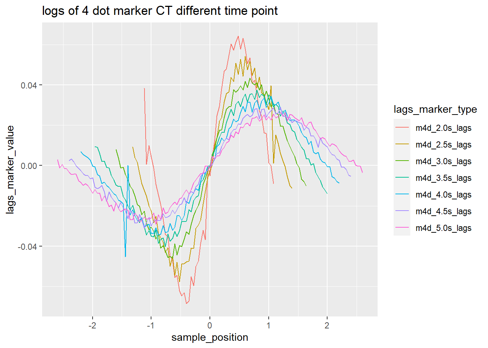
marker_4d_df2 |> select(lags_marker_type, lags_marker_value) |>
tbl_summary(
by = lags_marker_type,
type = all_continuous() ~ "continuous2",
statistic = list(all_continuous() ~ c("{min}, {max}", "{mean}","{sd}",
"{median}", "{p25}, {p75}"))
)| Characteristic | m4d_2.0s_lags, N = 56 | m4d_2.5s_lags, N = 69 | m4d_3.0s_lags, N = 82 | m4d_3.5s_lags, N = 100 | m4d_4.0s_lags, N = 111 | m4d_4.5s_lags, N = 121 | m4d_5.0s_lags, N = 131 |
|---|---|---|---|---|---|---|---|
| lags_marker_value | |||||||
| Range | -0.068, 0.064 | -0.058, 0.054 | -0.046, 0.043 | -0.040, 0.038 | -0.045, 0.035 | -0.031, 0.029 | -0.029, 0.027 |
| Mean | 0.001 | 0.000 | 0.000 | 0.000 | 0.000 | 0.000 | 0.000 |
| SD | 0.043 | 0.034 | 0.028 | 0.024 | 0.022 | 0.019 | 0.018 |
| Median | 0.001 | -0.001 | -0.001 | 0.000 | 0.000 | -0.001 | 0.000 |
| IQR | -0.037, 0.039 | -0.030, 0.035 | -0.025, 0.027 | -0.022, 0.022 | -0.018, 0.021 | -0.018, 0.018 | -0.016, 0.017 |
marker_6d |> mutate(
m6d_5.0s_lags = c(NA, diff(m6d_5.0s)),
m6d_4.5s_lags = c(NA, diff(m6d_4.5s)),
m6d_4.0s_lags = c(NA, diff(m6d_4.0s)),
m6d_3.5s_lags = c(NA, diff(m6d_3.5s)),
m6d_3.0s_lags = c(NA, diff(m6d_3.0s)),
m6d_2.5s_lags = c(NA, diff(m6d_2.5s)),
m6d_2.0s_lags = c(NA, diff(m6d_2.0s)),
) -> marker_6d_df
marker_6d_df |> select(sample_position, m6d_5.0s:m6d_2.0s) |> gather(
key = "marker_type", value = "marker_value", m6d_5.0s:m6d_2.0s) |>
na.omit() -> marker_6d_df1
marker_6d_df1 |> select(sample_position,marker_type, marker_value) |>
ggplot(aes(x=sample_position, y=marker_value, group=marker_type,
color=marker_type)) + geom_line() +
ggtitle("6 dot marker CT different time point") 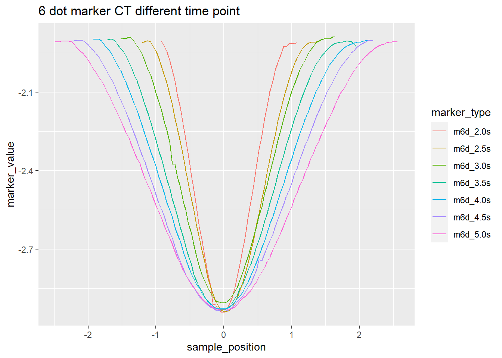
marker_6d_df1 |> select(marker_type, marker_value) |>
tbl_summary(
by = marker_type,
type = all_continuous() ~ "continuous2",
statistic = list(all_continuous() ~ c("{min}, {max}", "{mean}","{sd}",
"{median}", "{p25}, {p75}"))
)| Characteristic | m6d_2.0s, N = 51 | m6d_2.5s, N = 66 | m6d_3.0s, N = 80 | m6d_3.5s, N = 93 | m6d_4.0s, N = 103 | m6d_4.5s, N = 112 | m6d_5.0s, N = 127 |
|---|---|---|---|---|---|---|---|
| marker_value | |||||||
| Range | -2.94, -1.90 | -2.94, -1.90 | -2.91, -1.89 | -2.93, -1.90 | -2.93, -1.90 | -2.94, -1.90 | -2.93, -1.90 |
| Mean | -2.38 | -2.37 | -2.34 | -2.36 | -2.38 | -2.40 | -2.39 |
| SD | 0.37 | 0.38 | 0.37 | 0.37 | 0.37 | 0.37 | 0.37 |
| Median | -2.34 | -2.32 | -2.29 | -2.32 | -2.35 | -2.38 | -2.36 |
| IQR | -2.74, -2.01 | -2.74, -1.99 | -2.70, -1.97 | -2.73, -1.99 | -2.74, -2.01 | -2.75, -2.04 | -2.75, -2.02 |
marker_6d_df |> select(sample_position, m6d_5.0s_lags:m6d_2.0s_lags) |>
gather(key = "lags_marker_type", value = "lags_marker_value",
m6d_5.0s_lags:m6d_2.0s_lags) |> na.omit() -> marker_6d_df2
marker_6d_df2 |> select(sample_position, lags_marker_type, lags_marker_value) |>
ggplot(aes(x=sample_position, y=lags_marker_value, group=lags_marker_type,
color=lags_marker_type)) + geom_line() +
ggtitle("logs of 6 dot marker CT different time point")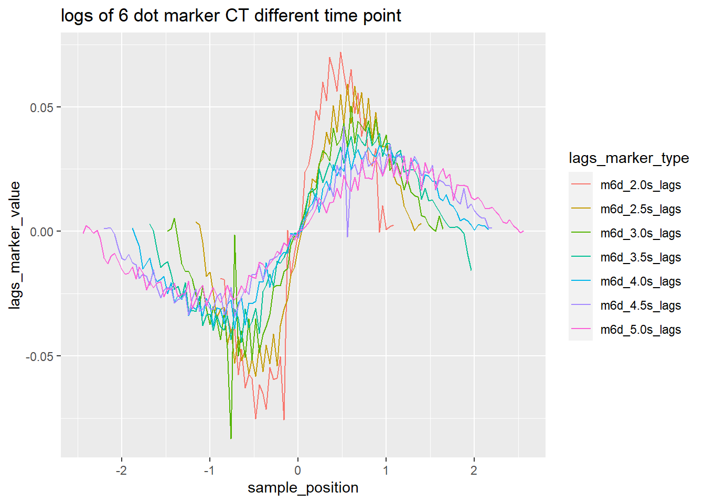
marker_6d_df2 |> select(lags_marker_type, lags_marker_value) |>
tbl_summary(
by = lags_marker_type,
type = all_continuous() ~ "continuous2",
statistic = list(all_continuous() ~ c("{min}, {max}", "{mean}","{sd}",
"{median}", "{p25}, {p75}"))
)| Characteristic | m6d_2.0s_lags, N = 50 | m6d_2.5s_lags, N = 65 | m6d_3.0s_lags, N = 79 | m6d_3.5s_lags, N = 92 | m6d_4.0s_lags, N = 102 | m6d_4.5s_lags, N = 111 | m6d_5.0s_lags, N = 126 |
|---|---|---|---|---|---|---|---|
| lags_marker_value | |||||||
| Range | -0.076, 0.072 | -0.058, 0.059 | -0.083, 0.050 | -0.045, 0.042 | -0.039, 0.035 | -0.034, 0.042 | -0.031, 0.031 |
| Mean | 0.000 | 0.000 | 0.000 | 0.000 | 0.000 | 0.000 | 0.000 |
| SD | 0.048 | 0.037 | 0.031 | 0.026 | 0.023 | 0.021 | 0.019 |
| Median | 0.001 | 0.003 | 0.001 | 0.001 | 0.002 | 0.001 | 0.001 |
| IQR | -0.050, 0.045 | -0.035, 0.034 | -0.024, 0.027 | -0.024, 0.025 | -0.022, 0.022 | -0.021, 0.020 | -0.018, 0.017 |
marker_4d_6d <- rbind(marker_4d_df2, marker_6d_df2)
marker_4d_6d |> mutate(
type = case_when(
grepl("d_2.0", lags_marker_type) ~ "2.0 sec",
grepl("d_2.5", lags_marker_type) ~ "2.5 sec",
grepl("d_3.0", lags_marker_type) ~ "3.0 sec",
grepl("d_3.5", lags_marker_type) ~ "3.5 sec",
grepl("d_4.0", lags_marker_type) ~ "4.0 sec",
grepl("d_4.5", lags_marker_type) ~ "4.5 sec",
grepl("d_5.0", lags_marker_type) ~ "5.0 sec"
)
) |> ggplot(aes(x=sample_position,y=lags_marker_value,
group=lags_marker_type,color=lags_marker_type)) +
geom_line() + facet_wrap(~type)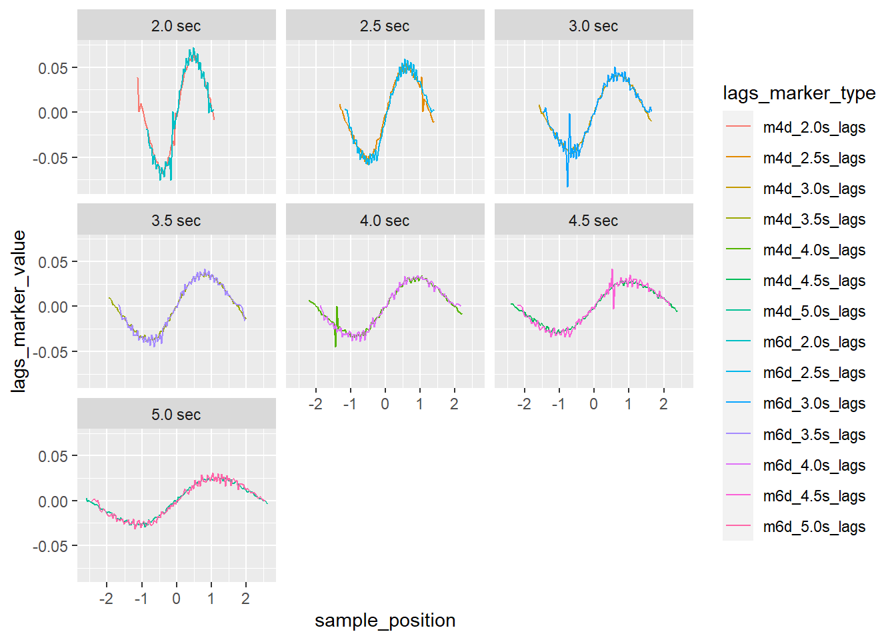
cross_correlation(marker_6d, m6d_5.0s, marker_4d, m4d_5.0s, "4d and 6d 5.0 sec")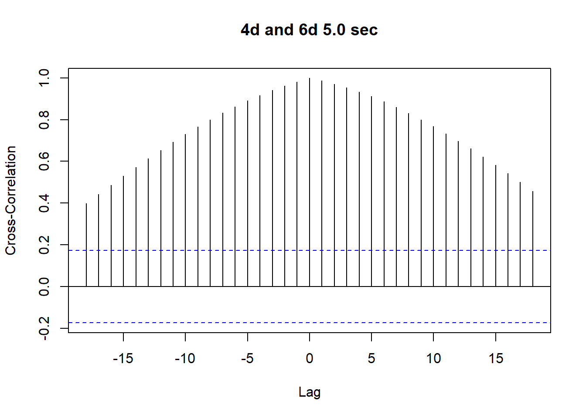
No significant lags (indicating similar patterns) found.$crosscorr_result
Autocorrelations of series 'X', by lag
-18 -17 -16 -15 -14 -13 -12 -11 -10 -9 -8 -7 -6
0.397 0.442 0.486 0.530 0.572 0.613 0.653 0.692 0.729 0.765 0.799 0.832 0.862
-5 -4 -3 -2 -1 0 1 2 3 4 5 6 7
0.890 0.916 0.941 0.962 0.982 0.999 0.986 0.971 0.954 0.934 0.911 0.887 0.860
8 9 10 11 12 13 14 15 16 17 18
0.831 0.800 0.768 0.733 0.698 0.660 0.622 0.582 0.542 0.500 0.458
$significant_lags
integer(0)cross_correlation(marker_6d, m6d_4.5s, marker_4d, m4d_4.5s, "4d and 6d 4.5 sec")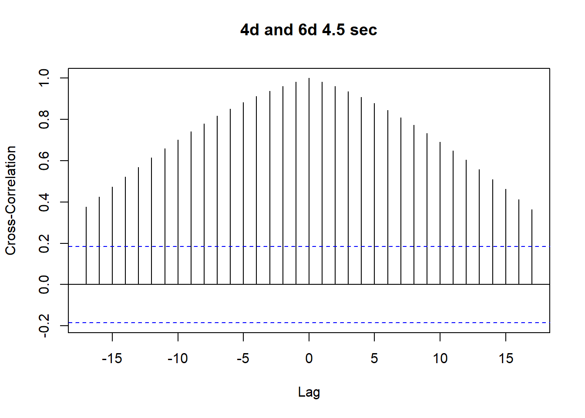
No significant lags (indicating similar patterns) found.$crosscorr_result
Autocorrelations of series 'X', by lag
-17 -16 -15 -14 -13 -12 -11 -10 -9 -8 -7 -6 -5
0.375 0.425 0.474 0.522 0.569 0.615 0.659 0.701 0.742 0.780 0.817 0.851 0.882
-4 -3 -2 -1 0 1 2 3 4 5 6 7 8
0.912 0.938 0.962 0.982 1.000 0.981 0.960 0.935 0.908 0.878 0.845 0.810 0.772
9 10 11 12 13 14 15 16 17
0.733 0.691 0.648 0.603 0.557 0.510 0.462 0.412 0.363
$significant_lags
integer(0)cross_correlation(marker_6d, m6d_4.0s, marker_4d, m4d_4.0s, "4d and 6d 4.0 sec")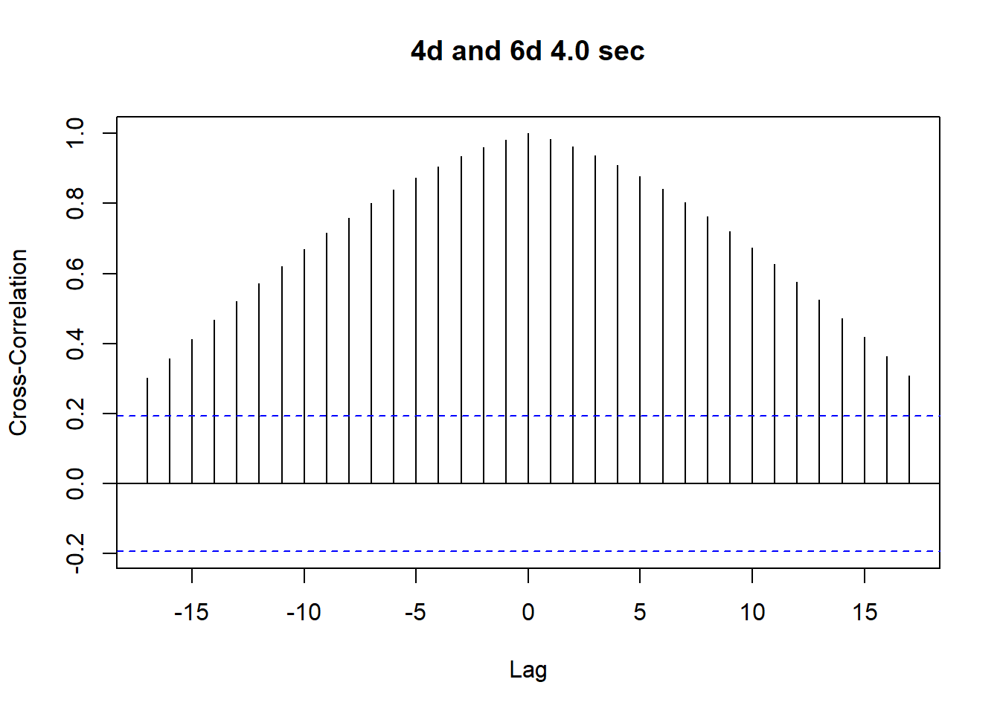
No significant lags (indicating similar patterns) found.$crosscorr_result
Autocorrelations of series 'X', by lag
-17 -16 -15 -14 -13 -12 -11 -10 -9 -8 -7 -6 -5
0.302 0.358 0.413 0.468 0.521 0.571 0.622 0.670 0.716 0.759 0.800 0.838 0.873
-4 -3 -2 -1 0 1 2 3 4 5 6 7 8
0.905 0.934 0.959 0.981 1.000 0.983 0.962 0.937 0.908 0.877 0.842 0.804 0.763
9 10 11 12 13 14 15 16 17
0.719 0.674 0.626 0.576 0.525 0.472 0.418 0.364 0.308
$significant_lags
integer(0)cross_correlation(marker_6d, m6d_3.5s, marker_4d, m4d_3.5s, "4d and 6d 3.5 sec")No significant lags (indicating similar patterns) found.$crosscorr_result
Autocorrelations of series 'X', by lag
-16 -15 -14 -13 -12 -11 -10 -9 -8 -7 -6 -5 -4
0.262 0.325 0.388 0.449 0.509 0.567 0.623 0.677 0.727 0.775 0.819 0.860 0.897
-3 -2 -1 0 1 2 3 4 5 6 7 8 9
0.929 0.958 0.981 1.000 0.983 0.960 0.933 0.900 0.864 0.824 0.780 0.732 0.681
10 11 12 13 14 15 16
0.628 0.572 0.514 0.454 0.393 0.332 0.269
$significant_lags
integer(0)cross_correlation(marker_6d, m6d_3.0s, marker_4d, m4d_3.0s, "4d and 6d 3.0 sec")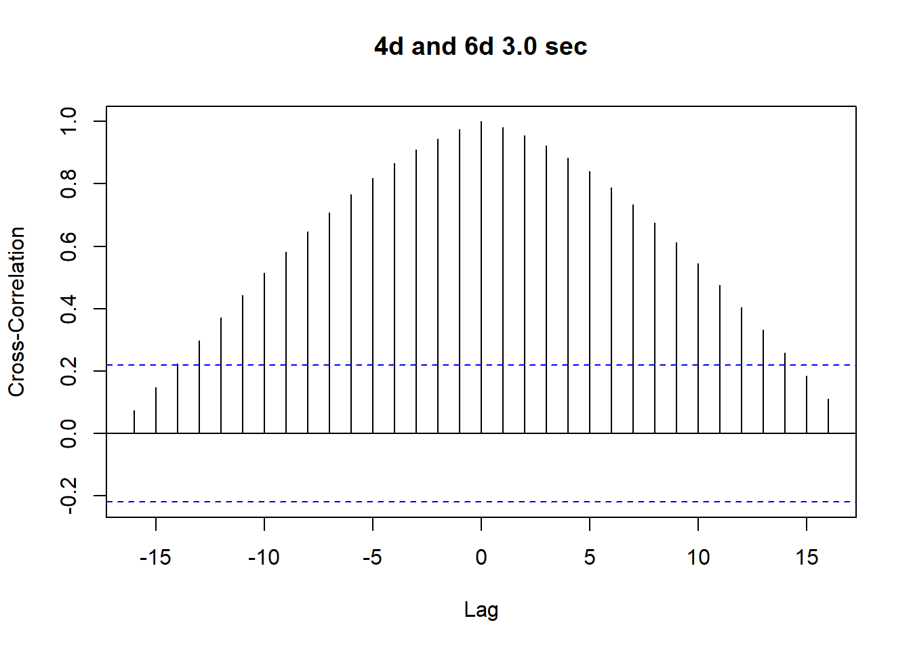
No significant lags (indicating similar patterns) found.$crosscorr_result
Autocorrelations of series 'X', by lag
-16 -15 -14 -13 -12 -11 -10 -9 -8 -7 -6 -5 -4
0.074 0.148 0.223 0.297 0.371 0.443 0.514 0.582 0.647 0.708 0.766 0.819 0.866
-3 -2 -1 0 1 2 3 4 5 6 7 8 9
0.908 0.945 0.975 0.999 0.981 0.955 0.923 0.884 0.839 0.789 0.734 0.674 0.611
10 11 12 13 14 15 16
0.545 0.476 0.405 0.332 0.259 0.185 0.112
$significant_lags
integer(0)cross_correlation(marker_6d, m6d_2.5s, marker_4d, m4d_2.5s, "4d and 6d 2.5 sec")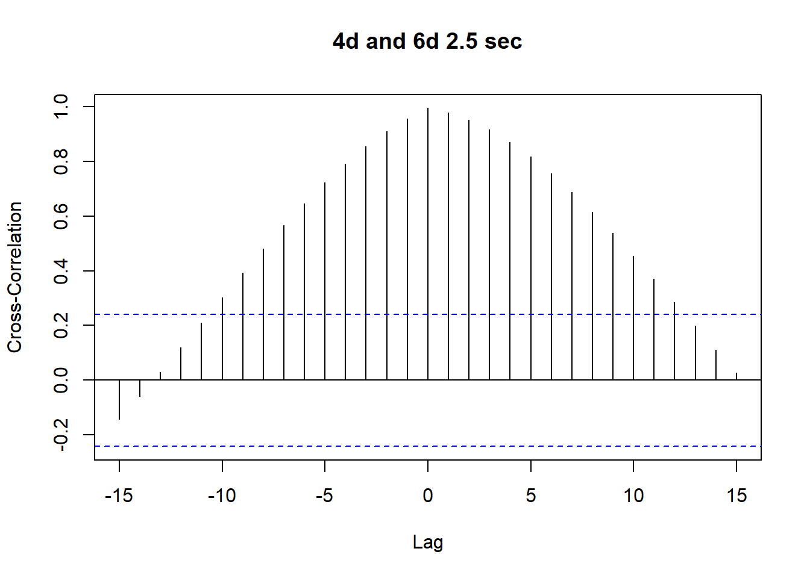
No significant lags (indicating similar patterns) found.$crosscorr_result
Autocorrelations of series 'X', by lag
-15 -14 -13 -12 -11 -10 -9 -8 -7 -6 -5
-0.142 -0.058 0.030 0.119 0.210 0.302 0.392 0.480 0.565 0.646 0.721
-4 -3 -2 -1 0 1 2 3 4 5 6
0.791 0.854 0.909 0.955 0.994 0.978 0.951 0.915 0.870 0.816 0.755
7 8 9 10 11 12 13 14 15
0.688 0.615 0.537 0.454 0.370 0.284 0.198 0.112 0.028
$significant_lags
integer(0)cross_correlation(marker_6d, m6d_2.0s, marker_4d, m4d_2.0s, "4d and 6d 2.0 sec")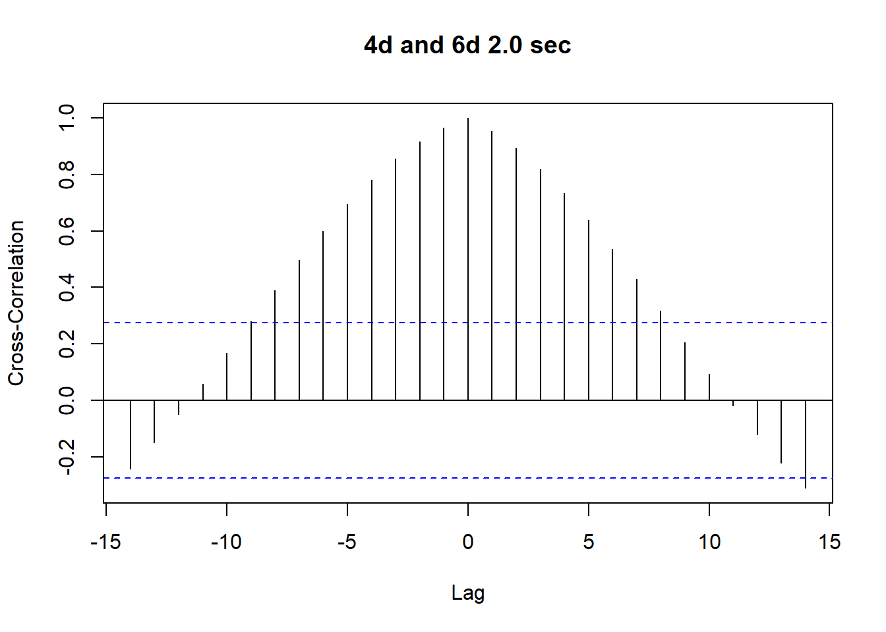
No significant lags (indicating similar patterns) found.$crosscorr_result
Autocorrelations of series 'X', by lag
-14 -13 -12 -11 -10 -9 -8 -7 -6 -5 -4
-0.242 -0.149 -0.048 0.058 0.168 0.279 0.389 0.497 0.599 0.694 0.779
-3 -2 -1 0 1 2 3 4 5 6 7
0.854 0.916 0.964 0.999 0.953 0.893 0.819 0.734 0.639 0.537 0.429
8 9 10 11 12 13 14
0.317 0.205 0.092 -0.018 -0.122 -0.220 -0.310
$significant_lags
integer(0)marker_analysis <- function(df1, col1, df2, col2) {
marker_6d_4d_s <- inner_join(
df1 %>% select(sample_position, {{col1}}),
df2 %>% select(sample_position, {{col2}}),
by = "sample_position") %>%
na.omit() %>%
mutate(
!!paste0(col1, "_delta") := c(NA, diff(!!sym(col1))),
!!paste0(col2, "_delta") := c(NA, diff(!!sym(col2)))
) %>%
gather(key = "marker_type", value = "marker_value", c({{col1}}, {{col2}})) %>%
gather(key = "marker_delta_type", value = "marker_delta_value",
c(!!sym(paste0(col1, "_delta")), !!sym(paste0(col2, "_delta"))))
plot1 <- marker_6d_4d_s %>%
ggplot(aes(x = sample_position, y = marker_value,
group = marker_type, color = marker_type)) + geom_line() +
ggtitle("6 dot and 4 dot marker")
plot2 <- marker_6d_4d_s %>%
ggplot(aes(x = sample_position, y = marker_delta_value,
group = marker_delta_type, color = marker_delta_type)) +
geom_line() +ggtitle("6 dot and 4 dot marker")
summary_tab <- marker_6d_4d_s %>%
select(marker_delta_type, marker_delta_value) %>%
tbl_summary(
by = marker_delta_type,
type = all_continuous() ~ "continuous2",
statistic = all_continuous() ~ c("{min}-{max}", "{mean}", "{sd}",
"{median}", "{p25} {p75}")
)
cc <- cross_correlation(df1, {{col1}}, df2, {{col2}})
return(setNames(list(marker_6d_4d_s, plot1, plot2, summary_tab, cc),
c("data", "plot1", "plot2", "summary", "cross_correlation")))
}
# # Calling the function
# kk = marker_analysis(marker_6d, "m6d_4.0s", marker_4d, "m4d_4.0s")
# kk$summary